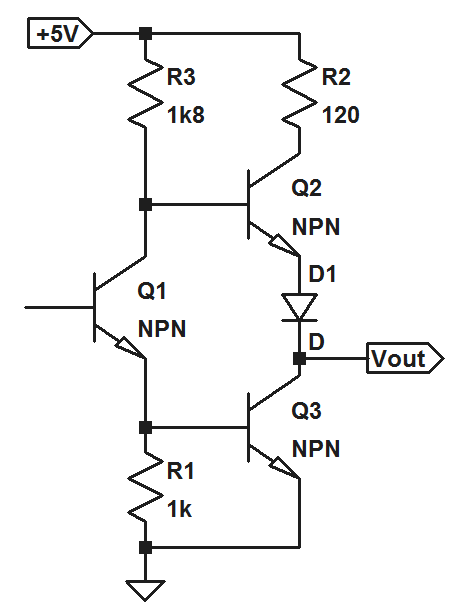
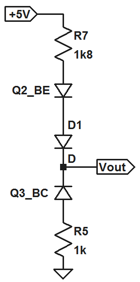

A friend with a 1993 Mitsubishi Diamante experienced a major problem which caused 4 injectors to remain on all the time, so fuel would just pour out of the exhaust. A mechanic's diagnosis was a computer malfunction, but the exact cause remained unknown. The ECM was sent to several automotive computer specialists, and was judged "unrepairable" by at least one of them. As a last ditch effort to save the car, the engine control module was sent to me.
The first thing I noticed when I got ahold of the ECM was that several capacitors had been replaced. Aside from that, it didn't look like anything else on the board had been messed with -- and there was quite a lot on the board. I was suprised to see a fairly extensive TTL and discrete transistor section peripheral to the processor and memory, and distinct from the output driving circuits. Long story short, I used a multimeter to test resistances and diode drops to aid in extracting a schematic from the PCB and was able to discover that the problem originated from a damaged 7402 TTL quad nor gate. There were two of these on the board functioning as enable circuits for the injector power transistors. The problematic part happened to be responsible for enabling and disabling 4 injectors.
The outputs of 7400 series TTL circuits are commonly called "totem pole" output stages, and they look like this:
Looking at the diagram, you can see that you should be able to measure two separate diode drops at the output -- (1) one comprised of a resistance in series with the CB junction of Q3 between ground and the output, and (2) another comprised of a resistance in series with the BE junction of Q2 and an additional diode between the positive rail and the output. the next picture shows what I mean:
I found that one of the two 7402 ICs on the board presented an open circuit between ground and each output instead of the expected diode drop. This meant that the outputs could not be pulled low! Hence the four injectors stuck in the on position.
I think it is safe to say that every electrical engineering student has at some point or another used a 7402 TTL chip. I happened to have a few DIP package 7402s in my bag of electronic belongings, but the component on the ECM board was surface mount... so my repair was not pretty. But it worked! And now the car passes smog.